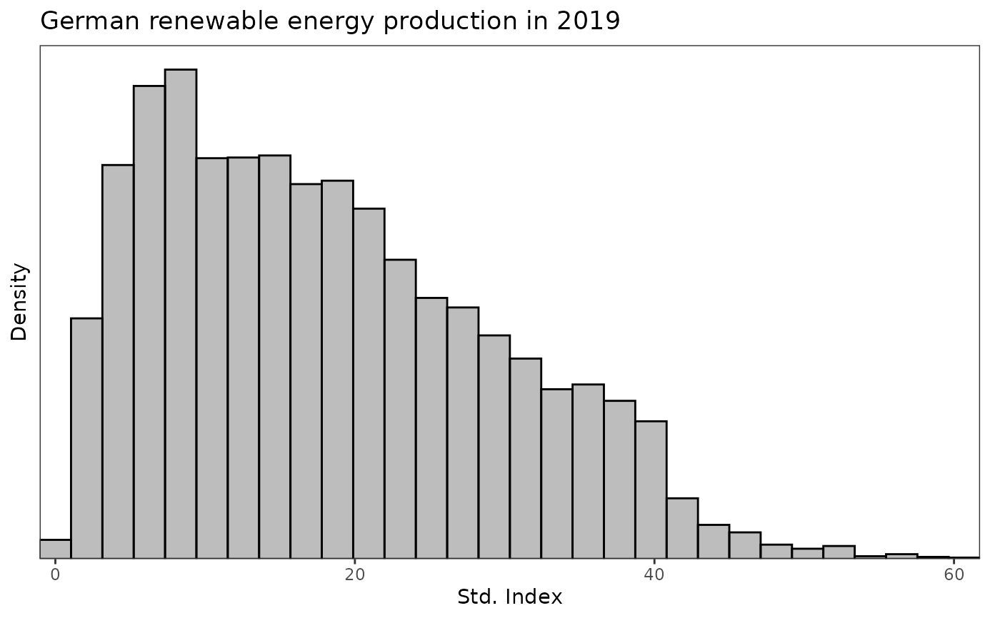
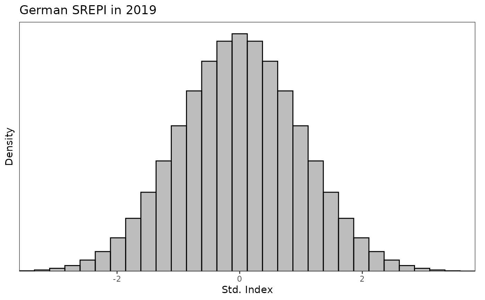
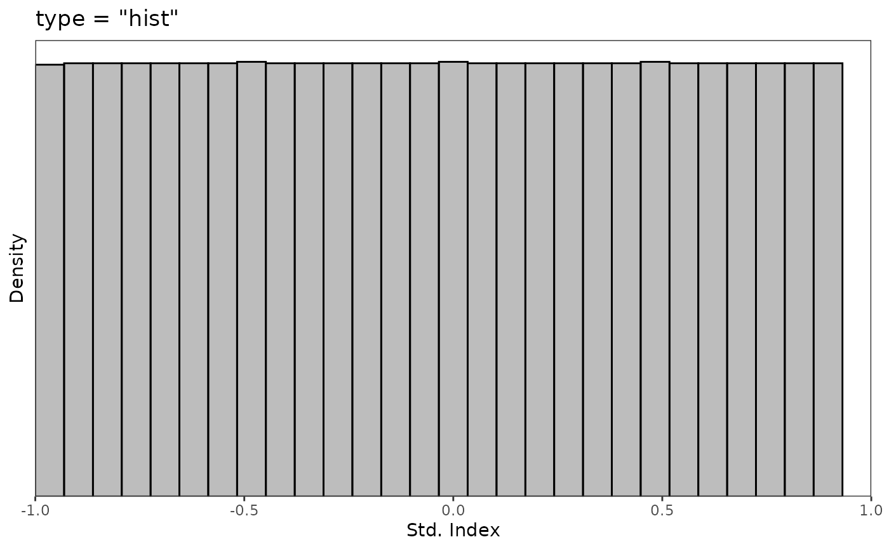
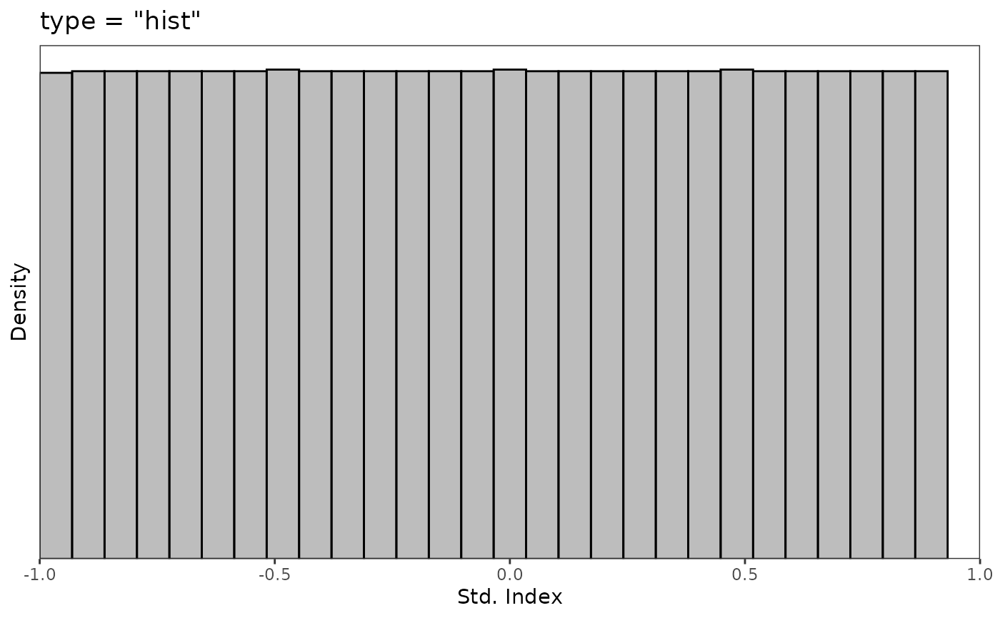

Plot a time series or histogram of standardised indices.
Usage
plot_sei(
x,
type = c("ts", "hist", "bar"),
title = NULL,
lab = "Std. Index",
xlims = NULL,
ylims = NULL,
n_bins = 30
)Details
The plot_sei() function can be used to plot either a time series (if type = "ts")
or a histogram (if type = "hist" or type = "bar") of the values in x.
A time series can only be displayed if x is an xts time series.
The argument lab is a string containing the label of the x-axis if
type = "hist" or type = "bar" and the y-axis if type = "ts".
The options type = "hist" and type = "bar" both display histograms
of the data x. With type = "hist", plot_sei() is essentially a
wrapper of geom_histogram(), while type = "bar" is a wrapper of
geom_bar(). The latter can provide more flexibility when plotting bounded data,
whereas the former is easier to use when superimposing densities on top.
Examples
data(data_supply)
# consider hourly German energy supply data in 2019
supply_de <- subset(data_supply, country == "Germany", select = c("date", "PWS"))
supply_de <- xts::xts(supply_de$PWS, order.by = supply_de$date)
supply_de_std <- std_index(supply_de, timescale = "hours")
plot_sei(supply_de, title = "German renewable energy production in 2019")
plot_sei(supply_de_std, title = "German SREPI in 2019")
plot_sei(supply_de, type = "hist", title = "German renewable energy production in 2019")

plot_sei(supply_de_std, type = "hist", title = "German SREPI in 2019")

# type = "hist" and type = "bar both output a histogram of the index values
# type = "hist" can be useful to superimpose densities on top of the histogram
z <- seq(-3.5, 3.5, length.out = length(supply_de_std))
plot_sei(supply_de_std, type = "hist", title = "German SREPI in 2019") +
ggplot2::geom_line(ggplot2::aes(x = z, y = dnorm(z)), col = "blue")
 # type = "bar" can be useful when the index values are bounded
supply_de_std <- std_index(supply_de, timescale = "hours", index_type = "prob11")
plot_sei(supply_de_std, type = "hist", xlims = c(-1, 1), title = 'type = "hist"')
#> Warning: Removed 2 rows containing missing values or values outside the scale range
#> (`geom_bar()`).

plot_sei(supply_de_std, type = "bar", xlims = c(-1, 1), title = 'type = "bar"')
# type = "bar" can be useful when the index values are bounded
supply_de_std <- std_index(supply_de, timescale = "hours", index_type = "prob11")
plot_sei(supply_de_std, type = "hist", xlims = c(-1, 1), title = 'type = "hist"')
#> Warning: Removed 2 rows containing missing values or values outside the scale range
#> (`geom_bar()`).

plot_sei(supply_de_std, type = "bar", xlims = c(-1, 1), title = 'type = "bar"')